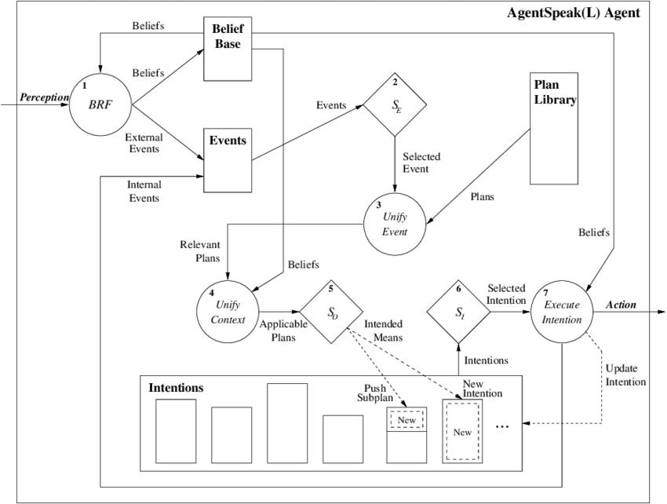

Supporting Autonomic Computing
via BDI Tooling
Martina Baiardi
Department of Computer Science and Engineering (DISI)
Alma Mater Studiorum — Università di Bologna
Via dell’Università 50, 47522 Cesena (FC), Italy
Context
Autonomic Computing

MAPE-K
Reference model for Autonomic and self-* systems design.

BDI
Reference framework (AgentSpeak(L)) for Multi-Agent Systems.
Why isn't BDI common in autonomic loops?
BDI?
Beliefs, Desires, Intentions
- It’s a framework to model Multi-Agent Systems through Goals
- Reduces the abstraction gap between cognitive abstractions and the abstractions of common paradigms
- Mimicking human-level notions such as beliefs, desires and intentions
three main abstractions:
- Beliefs: mental state of the agent, that changes over time.
- Desires: motivational state of the system.
- Intentions: deliberative state of the agent.
---
[1] Bratman, Michael. "Intention, plans, and practical reason." (1987)
[2] Anand S. Rao and Michael P. Georgeff. "BDI agents: From theory to practice." (1995)
[3] Anand S. Rao. "Agentspeak(l): BDI agents speak out in a logical computable language." (1996)
AgentSpeak(L) under the hood…
MAPE-K vs. BDI: Key differences
Conceptual vs. practical
- MAPE-K defines a conceptual model, needs application-specific implementations
- favors ad-hoc implementations
- BDI is typically reified into a practical tool (a language or library)
- enforces commitment to a technology
Architectural vs. formal
- MAPE-K defines a reasoning architecture and a loop scheme
- BDI has been formalised into AgentSpeak(L)
- Typical implementations adhere to the formal specification
Simple vs. complex
- MAPE-K is simpler
- can be implemented on a per-application basis
- BDI requires complex matching ad plan-selection algorithms
- hard to build from scratch in a custom fashion
BDI Agent Programming Languages
… some of them
[1] Collier, R.W., Russell, S.E., Lillis, D.. "Reflecting on agent programming with AgentSpeak(L). I" (2015)
[2] Hindriks, K.V.. "Programming rational agents in GOAL." (2009)
[3] Pokahr, A., Braubach, L., Lamersdorf, W.. "Jadex: A BDI reasoning engine." (2005)
[4] Bordini, R.H., Hübner, J.F., Wooldridge, M.J.. "Programming Multi-Agent Systems in AgentSpeak using Jason." (2007)
[5] D’Urso, F., Longo, C.F., Santoro, C.. "Programming intelligent iot systems with a python-based declarative tool." (2019)
[6] Palanca, J., Rincon, J.A., Carrascosa, C., Julián, V., Terrasa, A.. "A flexible agent architecture in SPADE." (2022)
[2] Hindriks, K.V.. "Programming rational agents in GOAL." (2009)
[3] Pokahr, A., Braubach, L., Lamersdorf, W.. "Jadex: A BDI reasoning engine." (2005)
[4] Bordini, R.H., Hübner, J.F., Wooldridge, M.J.. "Programming Multi-Agent Systems in AgentSpeak using Jason." (2007)
[5] D’Urso, F., Longo, C.F., Santoro, C.. "Programming intelligent iot systems with a python-based declarative tool." (2019)
[6] Palanca, J., Rincon, J.A., Carrascosa, C., Julián, V., Terrasa, A.. "A flexible agent architecture in SPADE." (2022)
Majority of BDI tools: Libraries
- Built for mainstream languages
- Subject to the syntactic restrictions of their host language
- “True” AOP/BDI feeling hardly achieved
custom language
AOP Custom Languages
Great ergonomy for BDI AOP (made by purpose)
BDI-specific, not multi-paradigm
Steep learning curve
Require custom tooling - IDEs, code suggestions, syntax highlighters, linters…
Small community
High maintenance cost!
A hybrid approach

JaKtA:
Jason-like Kotlin Agents [1]
Internal Domain-Specific Language (DSL) implemented in Kotlin
- Multi-paradigm support: OOP + FP + BDI AOP
- Hosted on a mainstream language: gentle learning curve
- Great learning resources for Kotlin
- Significantly large community for help
- Reuses the entire existing Kotlin toolchain
- Developed and maintained by the language maintainers and the community
- Maintenance is greatly reduced
- Good ergonomy
---
[1] Baiardi, M., Burattini, S., Ciatto, G., & Pianini, D. (2023, September). JaKtA: BDI Agent-Oriented Programming in Pure Kotlin.
[1] Baiardi, M., Burattini, S., Ciatto, G., & Pianini, D. (2023, September). JaKtA: BDI Agent-Oriented Programming in Pure Kotlin.
Why kotlin?
- Natively multi-paradigm (OOP + FP)
- Statically typed
- With a good IDE, helps understanding what can be written where
- Direct support to internal DSLs
- a.k.a “Type-safe builders” in the Kotlin documentation
- Support for multiplatform development
- Growing community
- Strongly pushed by Google for Android

Jakta: multi-paradigm AOP/BDI+OOP+FP
mas { // BDI specification
fun allPlayers(team: String) =
Regex("""<a\s(\X*?)\sdata-cy="player">(.*)<\/a>""") // Object-oriented regex library
.findAll(URL("https://www.besoccer.com/team/squad/$team").readText())
.map { team to it.groupValues[2] } // Lambda expression (Functional style)
listOf("napoli", "milan", "internazionale") // Kotlin standard library
.flatMap(::allPlayers) // Higher-order function (Functional style)
.forEach { (team, player) -> // Destructuring declaration
agent(player) {
beliefs { fact { squad(team) } }
goals { achieve(start) }
plans {
+achieve(start) onlyIf { squad(S).fromSelf } then {
execute(print("Hello! I play for", S))
}
}
}
}
}.start()
Future work
JaKtA is still in its early stages, in the future we plan to:
- Provide stable tools to emulate dynamic environments (Simulation)
- Validate the integration with an application, e.g.: drone swarm coordination (Use case)
- Expose BDI abstractions within the debugger for helping bug inspection (Debug)
- Use BDI abstractions in small fragments of non-BDI programs (Bidirectional paradigm blending)
- (we can already use fragments of functional and OOP inside a BDI program)
try jakta
github.com/jakta-bdi/jakta-examples